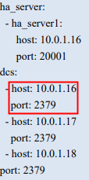

Before the backup, prepare related information by referring to this section.
Table 1 lists the required information.
Table 2 list the information required only when the CMDB cluster is backed up.
Item |
Mandatory or Not |
How to Obtain |
Section |
|---|---|---|---|
Username of the operating system (OS) where the openGauss/CMDB database is installed |
Yes |
Contact the database administrator to obtain the username. |
|
Environment variable file path |
No |
Contact the database administrator to obtain the information. |
Item |
Mandatory or Not |
How to Obtain |
Section |
|---|---|---|---|
DCS address |
Yes |
In the CMDB configuration file panwei.yml (obtain the file path from the database administrator), select the IP address and port number of a group of DCS nodes, which correspond to DCS Address and DCS Port, respectively. The following figure shows an example of the IP address and port number of a group of DCS nodes in the panwei.yml file.  |
|
DCS port |
Yes |
||
Database account and password |
Yes |
Contact the database administrator to obtain a database account with the backup or restoration permission and its password. To create an account, perform the following steps:
|